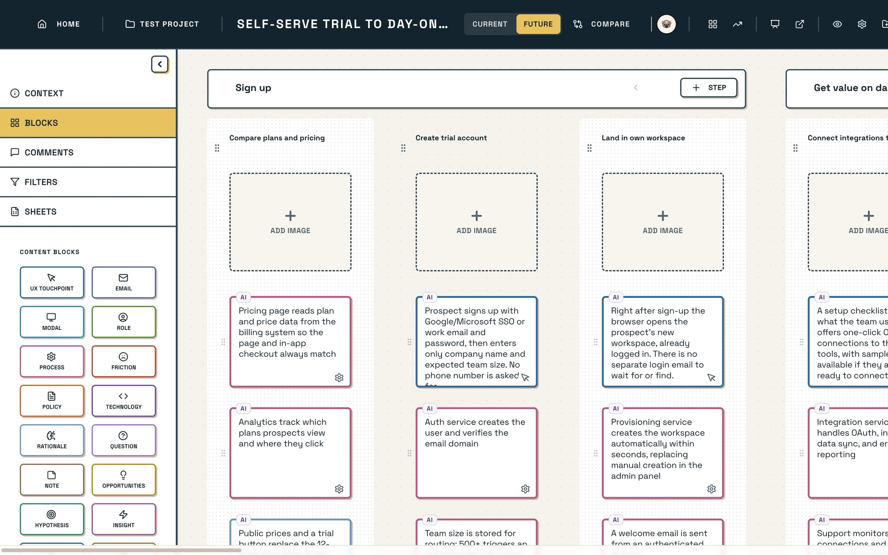

Blupi
See the whole service on one board: what the customer goes through, and everything behind it.

Blupi is a collaborative service blueprinting tool. Teams lay out a customer journey as phases and steps, then stack what happens at each step underneath it: the touchpoint, the people and process behind it, the friction, the policy, the technology. The part customers see and the part they don’t end up on the same board.
I built it because blueprints usually die in a slide deck. In Blupi they stay alive. Teams edit together with live cursors, keep a current-state and a future-state version of the same journey and compare them side by side, and capture real flows straight from the browser with a Chrome extension. Claude drafts a first pass of the board from the captured screens, so the team starts with something to argue with instead of a blank wall.